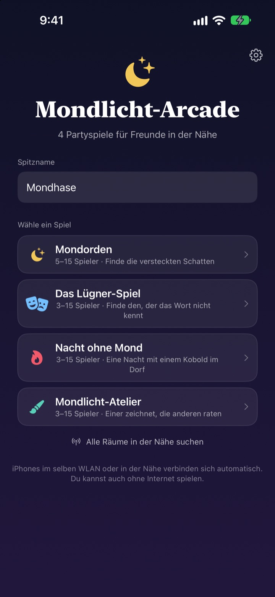
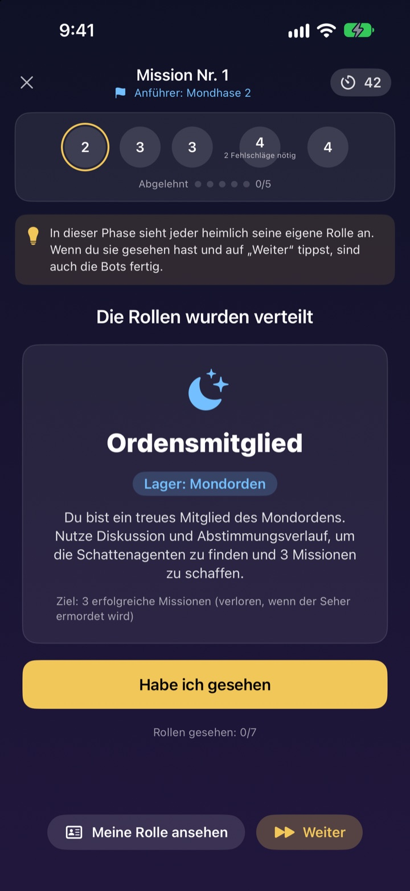
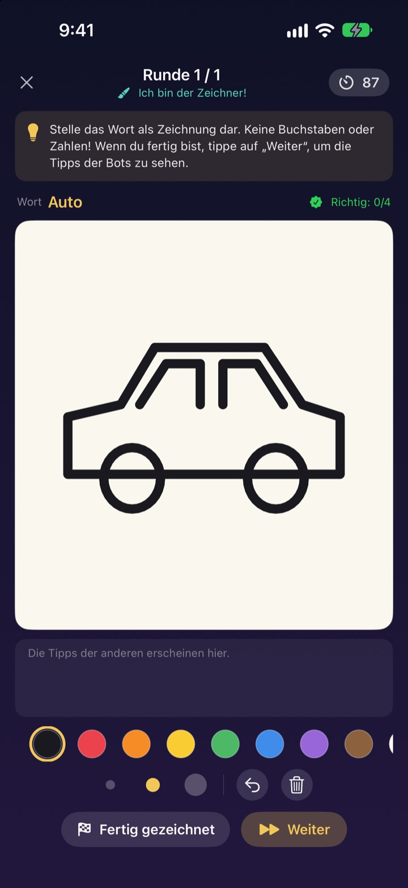
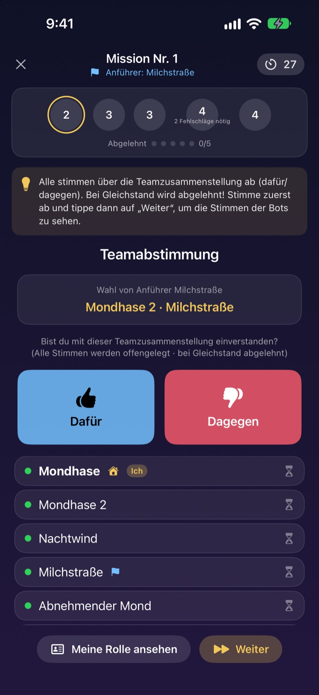

Alle da?
Handys raus.
Einer eröffnet einen Raum, alle in der Nähe sind in Sekunden drin. Rollen und geheime Wörter erscheinen nur auf dem eigenen Bildschirm. Keine Karten, und niemand muss Spielleiter sein.
Alle Spiele gratis. Kein Konto, kein Internet nötig.

Eine Runde Lügner-Spiel
Stell dir fünf iPhones auf dem Tisch vor und tippe nacheinander darauf. Nur einer kennt das Wort nicht. Ihr könnt den Bildschirm auch reihum weitergeben.
Alle sind da, aber keiner weiß, was man spielen soll
Spieleabend, WG-Party, Weihnachten mit der Familie. Für ein Rollenspiel wie Werwolf muss einer aussetzen und leiten, und gefaltete Zettel sind nie wirklich geheim. In der Ferienwohnung mit schwachem WLAN fallen Onlinespiele auch aus. Bei Mondlicht-Arcade übernehmen die iPhones Spielleitung, Rollenverteilung und Verbindung.
Deine Rolle bleibt auf deinem Bildschirm
Zum Spielstart bekommt jedes iPhone seine eigene Rolle oder sein Wort. Keine Karten verteilen, kein „Alle Augen zu“.
Bei der Abstimmung sieht man nur, wer schon abgestimmt hat. Wer wen gewählt hat, bleibt bis zur Auflösung geheim.

Vier Spiele für jede Runde
Im Lügner-Spiel zählt Wortgewandtheit, im Mondorden jagt ihr mit Missionen und Abstimmungen die Schatten, in der Nacht ohne Mond sucht ihr in einer Nacht den Kobold, und im Mondlicht-Atelier zeichnet einer und alle raten.
Mondorden ab 5 Personen, die anderen ab 3, alle für bis zu 15.

Neues Spiel? In Minuten gelernt
Jedes Spiel hat einen Modus „So wird gespielt“, in dem du mit Bots Schritt für Schritt eine Runde spielst. Hinweis oben lesen, auf „Weiter“ tippen.
Stürzt die App ab oder reißt die Verbindung, bringt dich „Fortsetzen“ auf dem Startbildschirm zurück in dieselbe Runde.

In drei Schritten loslegen
- 1
Spitzname und Spiel wählen
Alle öffnen die App, geben einen Spitznamen ein und wählen das Spiel.
- 2
Raum erstellen oder beitreten
Einer erstellt einen Raum, alle anderen finden ihn über „Räume in der Nähe suchen“.
- 3
Host startet
Sind alle drin, tippt der Host auf „Spiel starten“. Den Rest übernimmt die App.
Die vier Spiele
- Das Lügner-Spiel · 3 bis 15
- Alle bekommen dasselbe Wort, nur einer nicht. Reihum beschreibt jeder das Wort, dann wird der Lügner gewählt. Errät der ertappte Lügner das Wort, gewinnt er trotzdem.
- Mondorden · 5 bis 15
- Findet die Schatten, die sich im Orden verstecken. Die Anführung wählt ein Missionsteam, alle stimmen dafür oder dagegen, und das Team spielt heimlich Erfolg oder Fehlschlag. Wer zuerst drei Missionen für sich entscheidet, gewinnt.
- Nacht ohne Mond · 3 bis 15
- Eine Nacht, und im Dorf versteckt sich ein Kobold. Nachts handeln Schamane, Nachtdieb und Schelm im Geheimen. Im Morgengrauen wird diskutiert, und es gibt nur eine Abstimmung, um den Kobold zu finden.
- Mondlicht-Atelier · 3 bis 15
- Einer zeichnet das Wort, die anderen raten im Chat. Wer schneller rät, bekommt mehr Punkte, und wer zeichnet, punktet für jeden richtigen Tipp.
Jedes Spiel lässt sich im Modus „So wird gespielt“ erst allein mit Bots ausprobieren.
Häufige Fragen
Ich sehe den Raum nicht.
Prüfe, ob Host und Mitspieler im selben WLAN oder nah beieinander sind. Mondlicht-Arcade muss unter Einstellungen ▸ Datenschutz & Sicherheit ▸ Lokales Netzwerk eingeschaltet sein, um Geräte in der Nähe zu finden. Mit WLAN und Bluetooth gleichzeitig ist die Verbindung am stabilsten.
Muss ich den Zugriff auf das lokale Netzwerk erlauben?
Ja, so findet die App iPhones in der Nähe und verbindet sich mit ihnen. Falls du „Nicht erlauben“ getippt hast, schalte es unter Einstellungen ▸ Datenschutz & Sicherheit ▸ Lokales Netzwerk wieder ein.
Die Verbindung ist mitten im Spiel abgebrochen.
Öffne die App erneut und tippe auf dem Startbildschirm auf „Fortsetzen“, dann bist du wieder im selben Raum und in derselben Runde. Rolle und Punkte bleiben erhalten. Klappt es länger nicht, tritt über die Raumliste neu bei.
Jemand reagiert nicht und das Spiel hängt.
Der Host kann nicht reagierende Mitspieler jederzeit entfernen. Das Spiel wertet mit den Übrigen neu und geht weiter. Im GM-Spielleiter-Modus lässt sich ein hängender Schritt auch überspringen.
Wie viele Leute braucht man?
Mondorden braucht 5, Lügner-Spiel, Nacht ohne Mond und Mondlicht-Atelier starten ab 3. Jedes Spiel geht bis 15. Zu wenige da? Lernt die Regeln vorher mit Bots im Übungsmodus.
Brauchen wir Internet oder ein Konto?
Nein. Keine Registrierung, keine Anmeldung, kein Internet. iPhones in der Nähe verbinden sich direkt, und Spieldaten gehen nie an einen Server.
Kann ich ein Spiel erst allein ausprobieren?
Ja. Wähle ein Spiel und dann „So wird gespielt (Üben mit Bots)“. Bots betreten den Raum und du spielst eine ganze Runde Schritt für Schritt.
Wie melde ich einen Fehler oder schicke eine Idee?
Direkt in der App unter Einstellungen (Zahnrad) ▸ Support, oder per E-Mail an die Adresse unten. Wir antworten so schnell wie möglich.
Fehler, Ideen oder sonstige Fragen? Schreib an mizzking75@gmail.com.